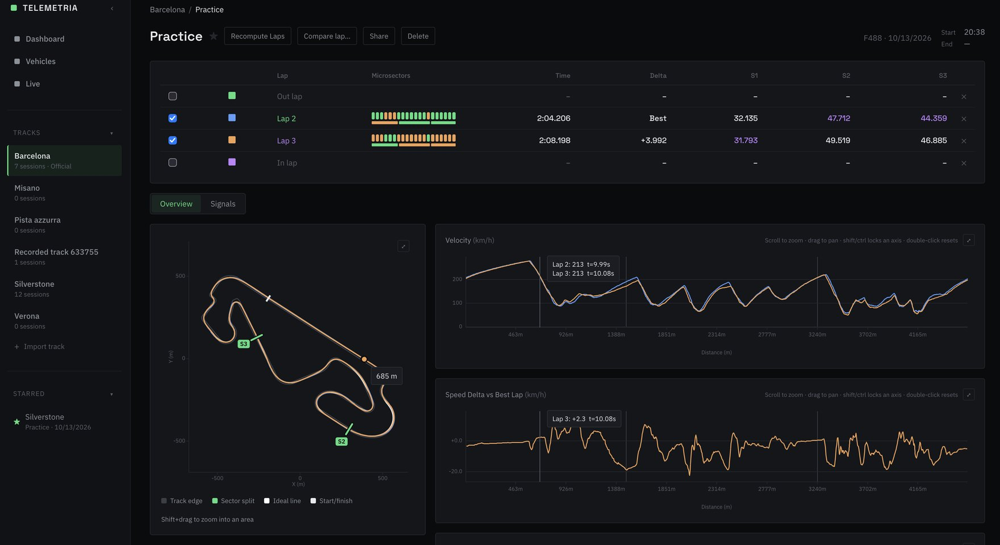
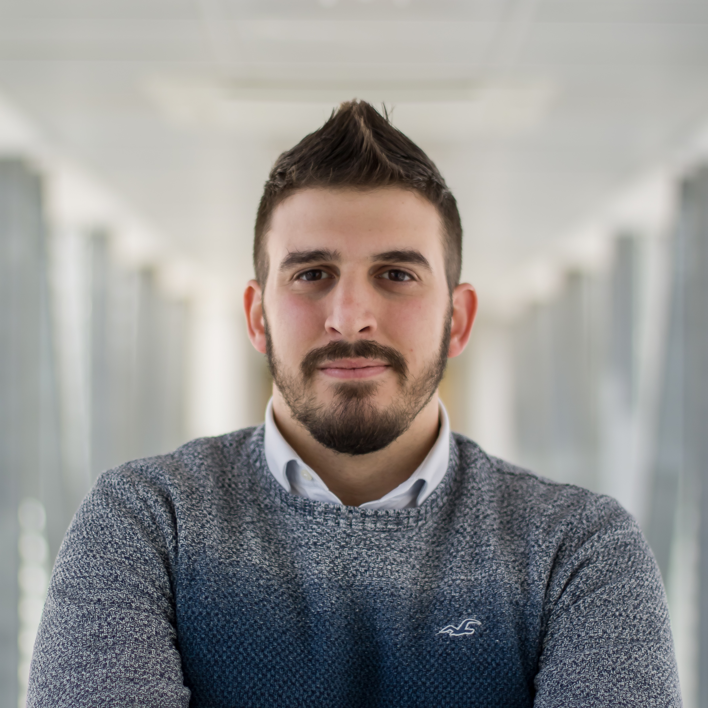
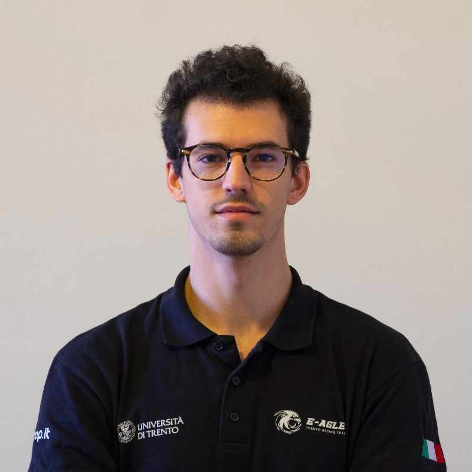
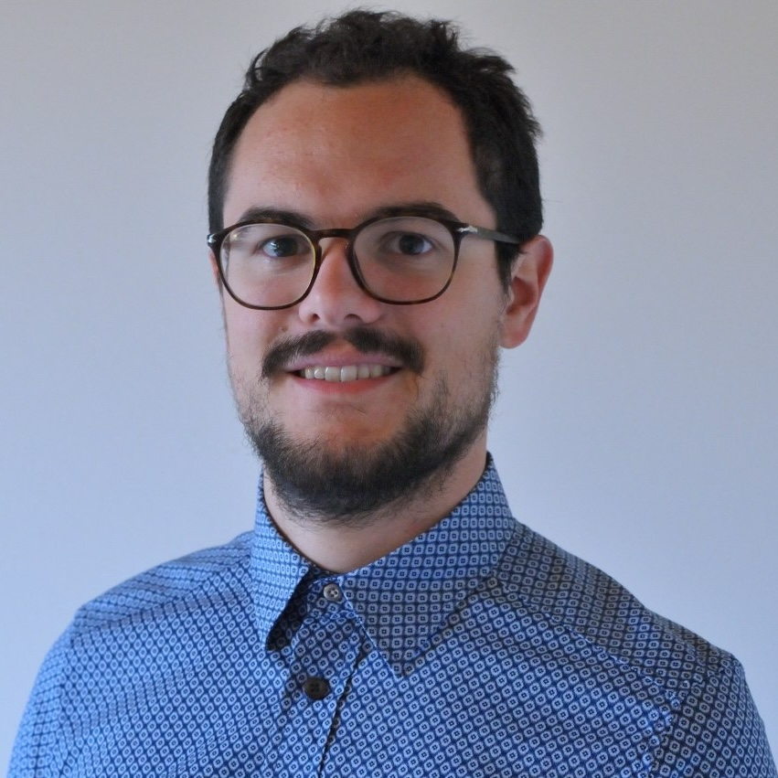
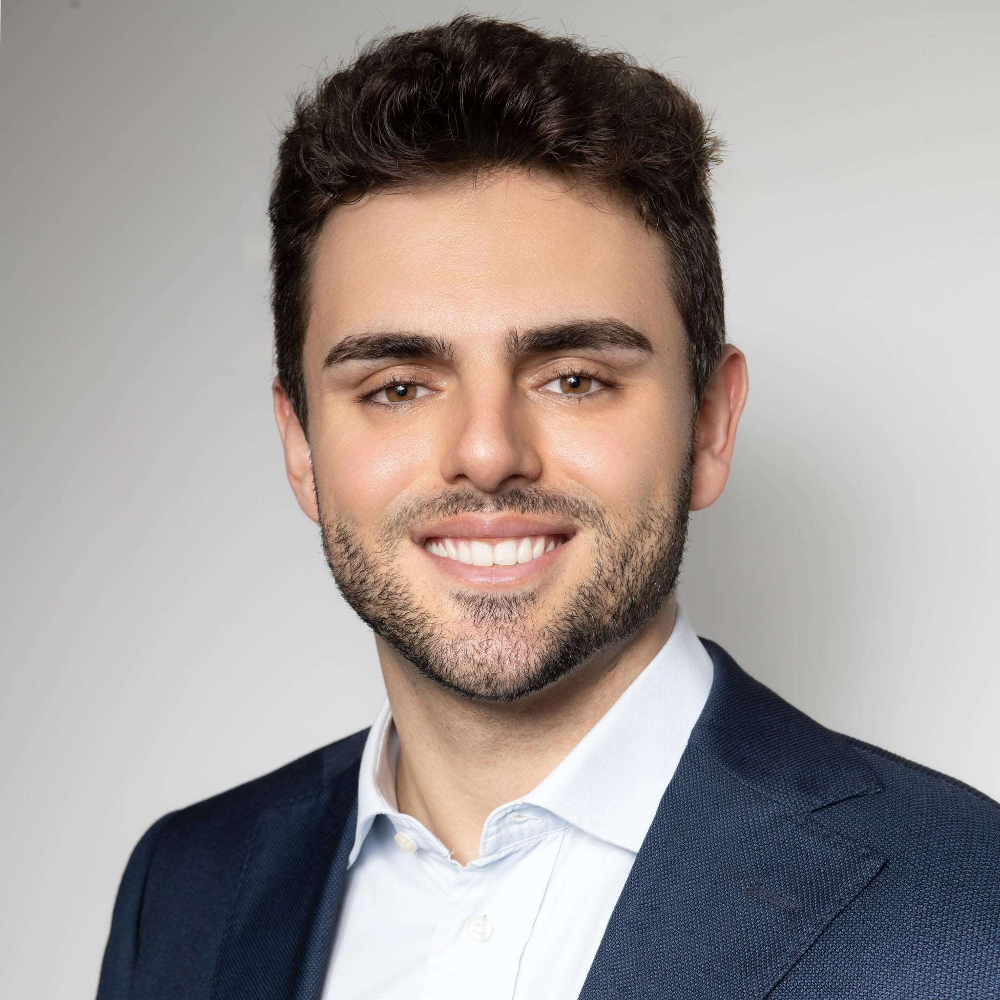
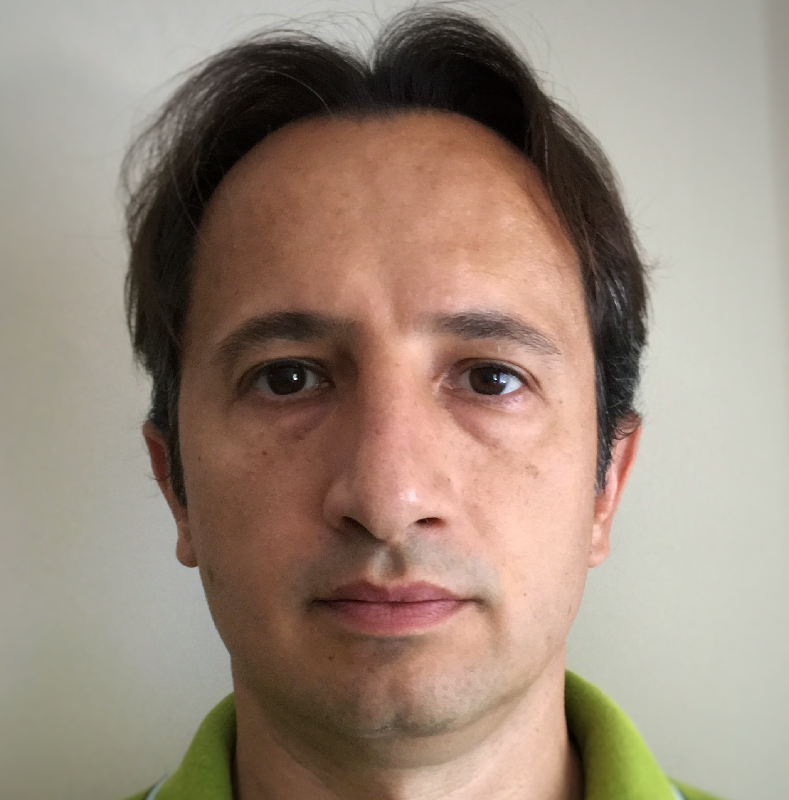
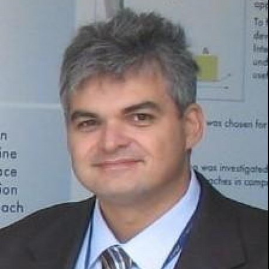

Il tuo ingegnere di pista.
L'intelligenza artificiale che ti guida in tempo reale e ti fa trovare la velocità, curva dopo curva.
Come funziona
Nessun grafico da leggere, nessuna sessione da riguardare. VMax lavora mentre guidi.
Impara il tuo kart
Con sensori standard, GPS e piattaforma inerziale, VMax costruisce in pochi giri un gemello digitale del tuo kart, e lo aggiorna con l'usura delle gomme e le condizioni dell'asfalto.
Trova il riferimento giusto
Dal gemello digitale calcola la traiettoria e i punti di frenata ottimali per quel kart su quel tracciato, e un obiettivo tarato sul tuo livello e raggiungibile adesso.
Ti guida, giro dopo giro
Durante il giro ricevi indicazioni immediate su dove frenare e come impostare la curva, a schermo e in audio. Migliori mentre guidi, non a sessione finita.
Il feedback arriva mentre guidi.
Gas e freno a colori, il tuo delta in tempo reale rispetto al riferimento, e cue vocali. Guardi la strada, non lo schermo.

Il cliente che torna vale più della tecnologia.
Nel noleggio solo un cliente su dieci torna più di una volta. VMax trasforma la sessione in un progresso che fa venire voglia di riprovare.
Ricavo aggiuntivo stimato all'anno per un impianto da circa 30.000 sessioni, a canone e investimento iniziale zero.
Nessuna modifica
Installazione in meno di 15 minuti per kart, senza interventi sul telaio.
Si integra
Il profilo del pilota e i risultati confluiscono nel software che l'impianto usa già.
Niente da imparare
Il pilota non configura e non legge grafici. Sale, guida, migliora.
Gli altri ti dicono cosa hai sbagliato solo a sessione finita.
Con dodici minuti in pista, un'analisi da fare a casa non la applichi mai. VMax interviene mentre puoi ancora correggere.
Dopo la sessione
Grafici e replay da studiare quando ormai sei sceso dal kart.
- Feedback a posteriori
- Richiede competenza tecnica
Durante il giro
Indicazioni immediate su frenate e traiettorie, mentre guidi.
- Coaching in tempo reale
- Comprensibile al primo giro
Non ricompone il tuo passato, calcola il tuo prossimo passo.
Dietro VMax ci sono anni di ricerca sul controllo ottimo del tempo sul giro all'Università di Trento, dove il gruppo fondatore pubblica su questi temi da oltre quindici anni.
Alza il tuo livello, sessione dopo sessione.
Un'app che ti allena a ogni uscita e tiene traccia dei tuoi progressi. Il coaching di chi corre davvero, alla portata di tutti.
Entra nella waitlist→Un ingegnere per ogni pilota.
Licenza multi-pilota per chi corre a livello agonistico. Il margine che decide un campionato, giro dopo giro, per tutta la squadra.
Parla con noi→Il team
VMax nasce all'Università di Trento, dalla ricerca sul controllo ottimo del veicolo. Cinque fondatori, due advisor scientifici.

Mattia Piazza
Lead
Filippo Faccini
CTO
Davide Stocco
Algorithm designerGiacomo Corradini
AI engineer
Giacomo Mason
CFO & pilota professionista
Prof. Francesco Biral
Scientific Advisor
Prof. Enrico Bertolazzi
Scientific AdvisorPronto a trovare la velocità?
Raccontaci chi sei. Ti ricontattiamo per una demo o per capire come VMax può aiutarti.
VMax è in sviluppo. Primo circuito pilota previsto nel 2027.